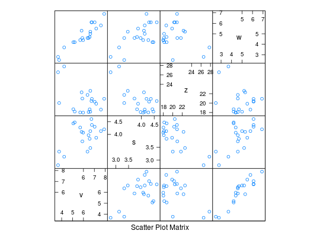
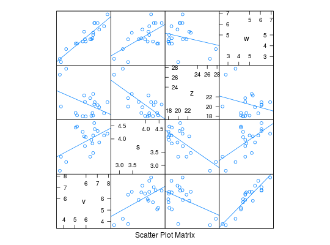

Dados obtidos por Perreira Filho et al. (1987), referentes ao número médio de vagens por planta, número de sementes por vagem, peso de 100 sementes e produção de grãos, obtidos em um experimento de avaliação de linhagens de feijão, conduzidos em Patos de Minas, MG. Neste experimento, para um ajuste de regressão múltipla, a produção de grãos de feijão é a variável dependente e as demais são as variáveis independentes.
Um data.frame com 20 observações e 5 variáveis, em que
linhvszwRAMALHO et al. (2005), Tabela 12.8, pág. 225.
Pereira Filho, I. A., Ramalho, M. A. P., Ferreira, S. Avaliação de Progênies de Feijão e Estimativas de Parâmetros Genéticos na Região do Alto São Francisco em Minas Gerais, Pesquisa Agropecuária Brasileira, Brasília, v. 12, n. 9/10, p. 987-993. 1987.
data(RamalhoTb12.8)#> Warning: data set ‘RamalhoTb12.8’ not foundplot(RamalhoTb12.8[, -1])library(lattice) splom(RamalhoTb12.8[, -1])splom(RamalhoTb12.8[, -1], type = c("p", "r"))